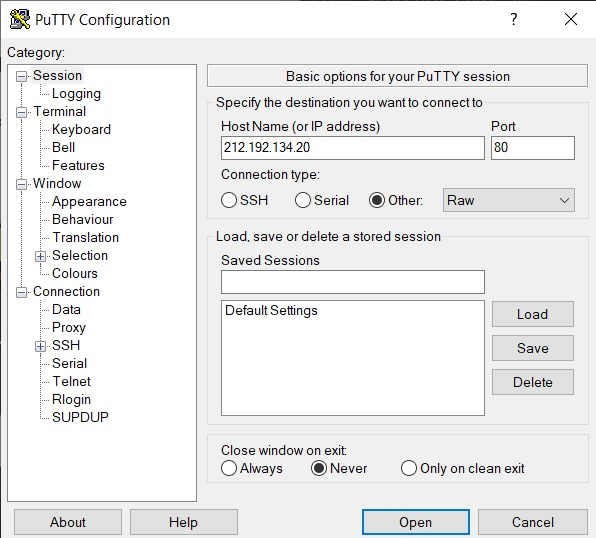
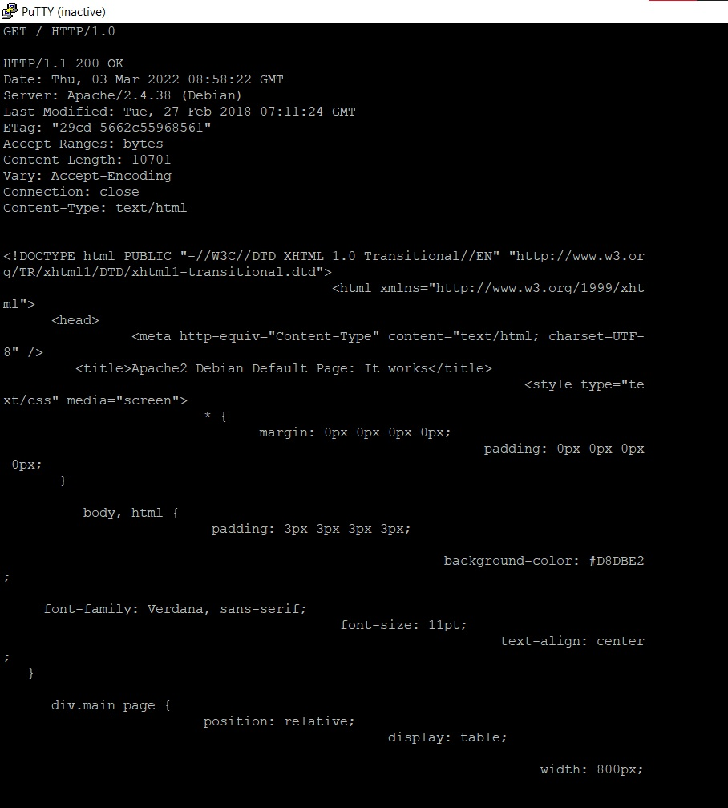
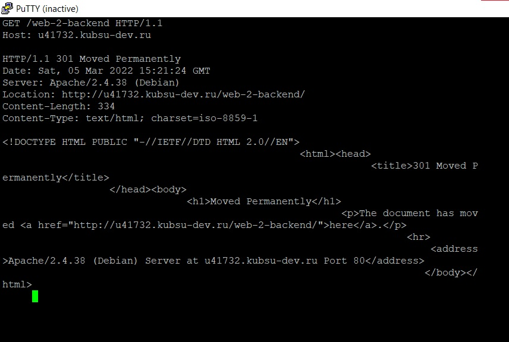
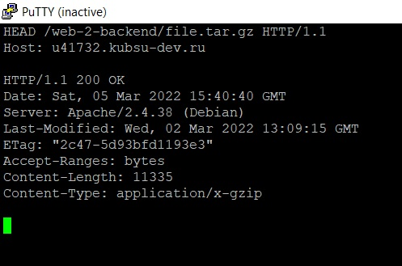
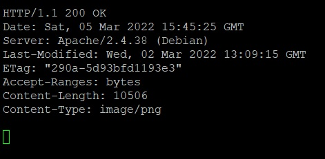
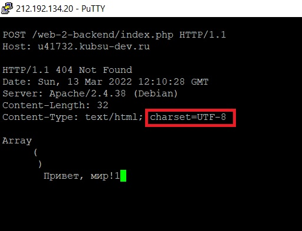

PUTTY
Все файлы перенесены на сервер локально через FileZilla

1) получить главную страницу методом GET в протоколе HTTP 1.0
Мы хотим получить содержимое страницы, использую метод GET.
HTTP / 1.0 может поддерживать длинные соединения
HTTP / 1.0 считает, что каждый сервер привязан к уникальному ip,
поэтому заголовок запроса не содержит имени хоста (поле HOST)

2) получить внутреннюю страницу методом GET в протоколе HTTP 1.1
HTTP / 1.1 несколько запросов и ответов могут выполняться одновременно, т.е. конвейерная обработка
HTTP / 1.1 добавляет поле HOST
HTTP / 1.1 добавляет код состояния 100.
Использование кода состояния 100 (Продолжить) позволяет клиенту протестировать сервер с заголовком запроса перед отправкой тела сообщения запроса,
чтобы узнать, хочет ли сервер получить тело запроса, а затем решить, отправлять ли тело запроса.

3) определить размер файла file.tar.gz, не скачивая его

4) определить медиатип ресурса /image.png

5) отправить комментарий на сервер по адресу /index.php

6) получить первые 100 байт файла /file.tar.gz
Заголовок запроса Range указывает серверу какую часть документа ему необходимо вернуть.

7) определить кодировку ресурса /index.php
Unicode Transformation Format, 8-bit — «формат преобразования Юникода, 8-бит») —
распространённый стандарт кодирования символов,
позволяющий более компактно хранить и передавать символы Юникода, используя переменное количество байт (от 1 до 4), и обеспечивающий полную обратную совместимость с 7-битной кодировкой ASCII.
